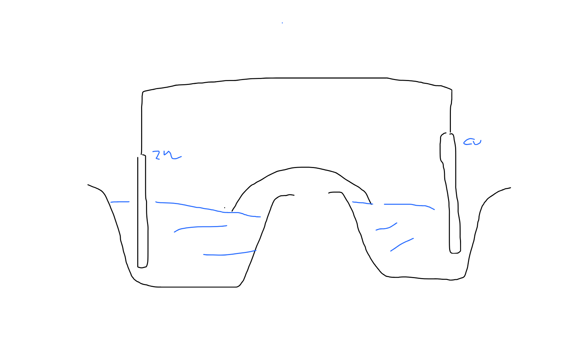
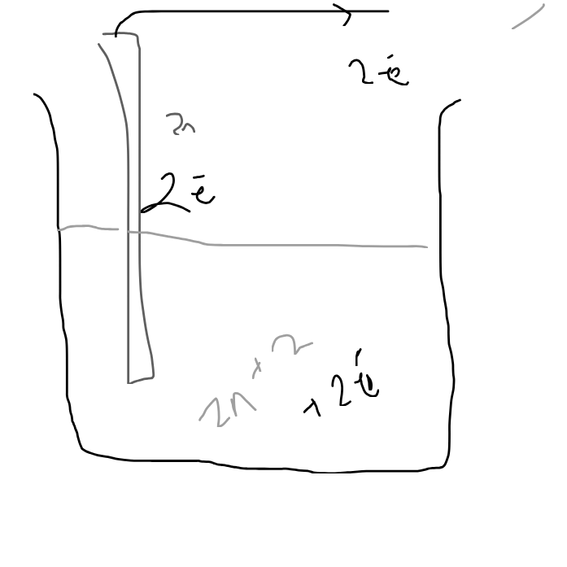

Cells! wait Gavlanic Celss!!!
This page would be dedicated to cute explanations of galvanic also known as Electrochemical cells! So what are electrochemical cells????
Electrochemical cells
Electrochemical cells are those cells which uses chemical energy and convert it into electectrical energy !!!!!!
Lets make a animation so you can understand :D, working on animation, is very tough, but still i would try :D hehe
Daniel Cell
Lets talk about daniel cell

here we can see the zince rod dipped in \(CuSO4\) hmm you have seen these reactions in your junior claases, but yeah its a good reaction, which we see and follow :D that zince displaces copper and copper gets deposit while the color changes to transparent?? right remember something studying like this?? so what is happening is a simple redox reaction!
\[CuSO_4 + Zn(s) -> ZnSO_4 + Cu(s) \]What is happening is a redox reaction where we can say is that, the copper whose inital state was \(+2\) gets reduced to \(0\) and where as in zinc which was initial \(0\) gets oxidise to \(+2\). taking place a simple redox reaction. so lets assume a cell where we work on this equation, since we want to exploit the feature of the the electron transfer, but what we can say is that what if we can take this, this transfer of two electron.

So yeah lets first see , here we can say that we can see lets take our left side to be filled with \(ZnSO_4(aq)\) solution with a zinc rod and the right side to be filled with a solution of \(CuSO_4(aq)\) solution with a copper rod in it so what? happens right???
Actually this is a daniel cell, and why its working like a cell, that is very cool to imagine \ Lets say we have a configuration like This now at the left side we have zince
\[Zn^{0} -> Zn^{+2} + 2e\] at anode (always oxidation) \[2Cu^{+2} + 2e-> 2Cu^0 \] at cathode (always reduction)So as you can see both reaction occurs simulatenously, but here we have the freedom of extracting the electrons and using it in the waire to create and electric charge !! so cool right
But how does it work, and for which element does it work?
So usually when we talk about daniel cell,s we usually see things in pair, rather than seeing in whole What i meant by pair, is that we usually see anode and cathode in pair , since we have to choose it !
Some more indepth explnanation!
A ore indepth explanantion is that we can zoom in and see things in real life, lemme create a visualy stunning image here

so here at the anode part, the zinc disacoosiates into \(Zn^{+2}\) and then we cans say the 2 electrons goes up to the zinc rod (metal) and then goes upto a conducting wire then at the right side!
We can say at the cathode side, since the copper was +2 in oxidation state, the copper gets reduced to +0 oxidatino state and gets deposit in the copper rod making it thicker hence we can say that a favourable reaction is happenin :D
Hence due to this, if we connect our voltmeter in parallel we could see that we would notice, a potenital difference being created, but how would we measure the potenntial difference, thats a good difference since we know that we can't measure the potential energy as it is ecuase, potential energy is a thing depentend on reference point, but if we try to measure the potential difference abcorss two points, let we take any relative starting point that would eb constant since its the the potnntial differrnece.
How do we measure the potneital difference????
Since for measuring the potential difference we need a refernce point or a relative term, as you have seen in your juniour claases, or something like a reactivity series thats what we are gonna refernce !
Yess our old buddy hydrogen, we are gonna take a refernce point as him!!!